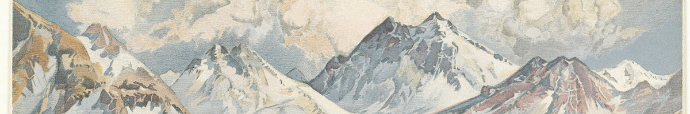
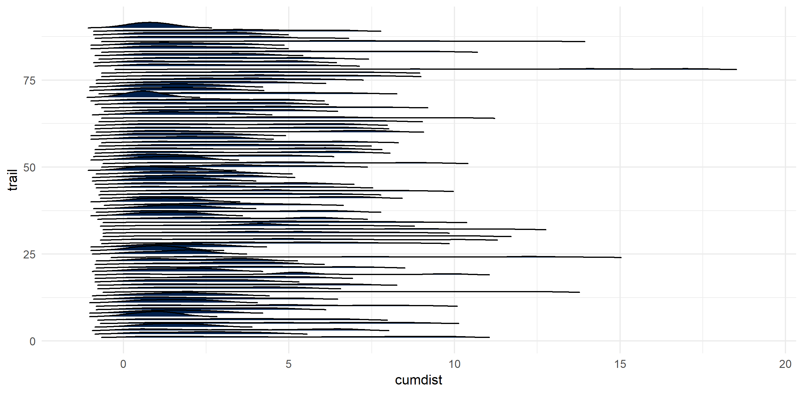
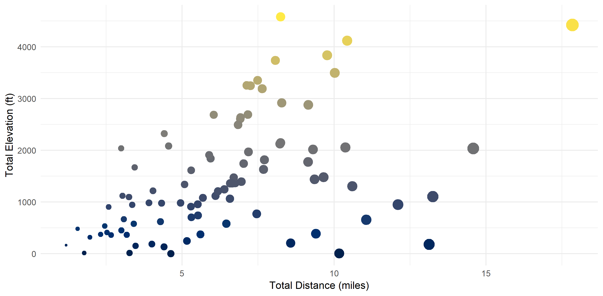
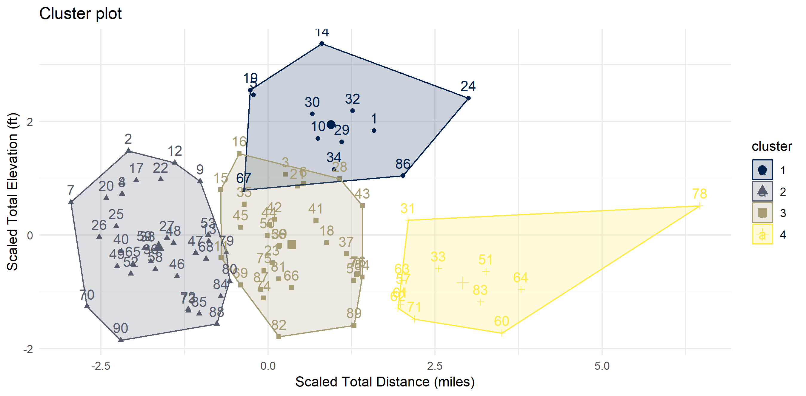
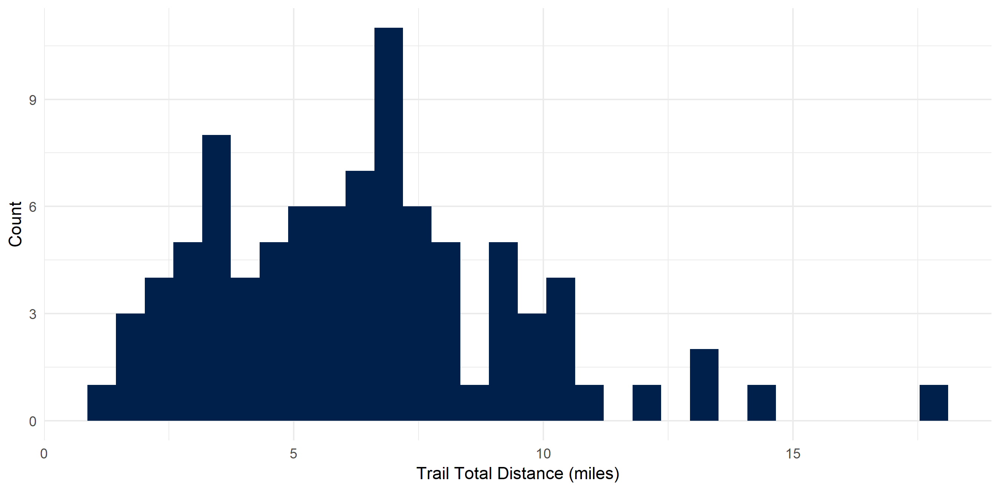
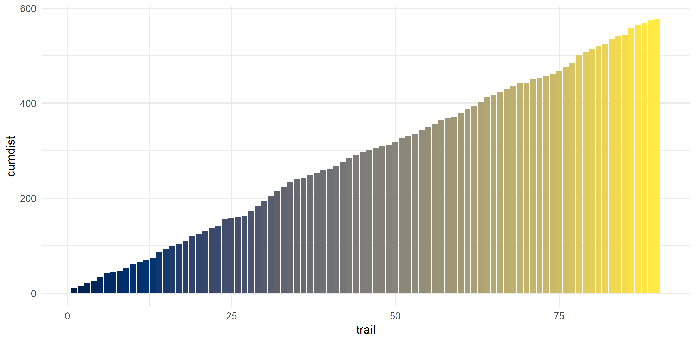
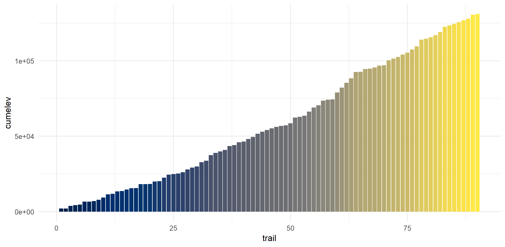

library(tidyverse)
library(googleway)
library(plotKML)
library(geosphere)
googleway::set_key(API_KEY_HERE)Taking a peek into my hiking data
I got my hands on a bunch of GPX files.
analysis

I moved to Seattle at the end of 2016 and since then have done over 100 hikes (depending on your definition of ‘a hike’). I must admit I’ve been abysmal at tracking any data regarding my hiking activity beyond a Google spreadsheet, despite the ubiquity of trail tracking apps that exist.
Recently, I signed up on AllTrails to start collecting data on my hikes. The Pro service offers many wonderful features, including the ability to download GPX data on hikes. I was so excited by this that I decided to try to visualize the hikes I have done.
I ran a poll on Twitter in which I asked whether people embed code in the main text of their blog post or at the end. 91% embed in the main text [n = 85]. I structured this post accordingly.
Pulling data
Choose packages
It took a bit to decide which packages had the functions needed to run the spatial analyses. In the end, I decided on:
- plotKML: A package containing functions to read GPX files.
- geosphere: A package containing functions for geospatial calculations. I decided to use this for finding out distances between lon/lat.
- googleway: A package allowing access to the Google Maps API. To run this, you need to obtain a Google Maps API key and load it to R by using
set_key(). I use this for elevation calculations but the API can also obtain the distance between points.
Tidy data
I downloaded each GPX file from AllTrails and saved them in a file in my project organization. Their file names were TRAILNAME.gpx.
- Using
plotKML::readGPX()results in the files being loaded as lists. - I used
purrrin conjunction withplotKML()to handily read them in and add the file name to the list.
# find gpx files
data_path <-
here::here("data", "raw", "gpx_files")
files <-
dir(data_path, pattern = "*.gpx", full.names = TRUE)
# get trail names
names <-
dir(data_path, pattern = "*.gpx", full.names = FALSE) %>%
str_extract(".+?(?=.gpx)")
# read all gpx files
gpx_dat <-
map2(files,
names,
~ readGPX(.x,
metadata = TRUE,
bounds = TRUE,
waypoints = TRUE,
tracks = TRUE,
routes = TRUE) %>%
list_modify(trail = .y)) # otherwise you can't tell which entry is for which trailCalculate elevation
We can use googleway::google_elevation() to access the Google Elevation API and calculate elevation for every lon/lat pair from the GPX files. Unfortunately, the API accepts and returns only a few requests at a time (~200 rows for these files). We have over 51,000 rows of data. So, we can create groups for every 200 rows and use a loop to make a call for each
This results in a list, so we can then create a tibble pulling out the data we want.
lonlat_dat <-
gpx_dat %>%
map_df(., ~.x$"routes"[[1]], .id = "trail") %>%
select(trail, lon, lat) %>%
group_by(trail) %>%
ungroup() %>%
mutate(group_number = (1:nrow(.) %/% 200) + 1) # https://stackoverflow.com/questions/32078578/how-to-group-by-every-7-rows-and-aggregate-those-7-values-by-median
dat_lapply <- lapply(1:max(lonlat_dat$group_number), function(x) {
Sys.sleep(3)
lonlat_dat %>%
filter(group_number == x) %>% # added a filter so you only pull a subset of the data.
do(elev_dat =
data.frame(
google_elevation(
df_locations = dplyr::select(., lon, lat),
location_type = "individual",
simplify = TRUE)))
})
dat_lapply_elev_dat <-
dat_lapply %>%
map(., ~ .x$"elev_dat"[[1]])
elev_df <-
dat_lapply_elev_dat %>% {
tibble(
elevation = map(., ~ .x$"results.elevation"),
lon = map(., ~ .x$"results.location"[["lng"]]),
lat = map(., ~ .x$"results.location"[["lat"]])
)
} %>%
unnest(.id = "group_number") %>%
select(group_number, elevation, lon, lat)Calculate distance
Now we have a list of trails, longitudes and latitudes along their paths, and the elevation for each of those points. Now we want to calculate the distance along the paths.
- We bring back
lonlat_datso we know what trails with which each point are associated. - To use calculate distance, we can use
distHaversine()with two sets of lon/lat. We create the second set of lon/lat by creating a new variable that takes the “next” value in a vector (so we’re calculating the distance between point A and point B, point B to point C, and so on). cumsum()accumulates the distances between each set of lon/lat.- Finally, we calculate the elevation gain for each hike.
hiking_dat <-
plyr::join(elev_df, lonlat_dat, type = "left", match = "first") %>%
group_by(trail) %>%
mutate(elev_feet = elevation * 3.281, # to convert to feet
lon2 = lead(lon, 1),
lat2 = lead(lat, 1)) %>%
ungroup() %>%
mutate(dist = distHaversine(hiking_dat[, 2:3], hiking_dat[, 7:8])/1609.344) %>% # to convert to miles
group_by(trail) %>%
mutate(cumdist = cumsum(dist),
elev_gain = elev_feet - first(elev_feet)) %>%
ungroup()Create additional tables
For nerdy kicks, I also wanted to find out my ‘average’ hike - that is, the average distance, the average elevation, and the average elevation for each distance. I also wanted to see the total distance and elevation for each trail for which I pulled data.
avg_elev <- # average elevation by distance
hiking_dat %>%
group_by(round(cumdist, 1)) %>%
summarize(mean(elev_gain))
hiking_dat_by_trail <- # total gain/distance by trail
hiking_dat %>%
select(trail, cumdist, elev_gain) %>%
group_by(trail) %>%
summarize(tot_dist = max(cumdist, na.rm = T),
tot_elev_gain = max(elev_gain)) %>%
mutate(tot_dist_scaled = scale(tot_dist), # for cluster analysis
tot_elev_scaled = scale(tot_elev_gain))Creating visualizations
Disclaimer
For data collection, I downloaded each trail’s GPX files from AllTrails. Because these data are proprietary, I will not be providing them. Some things to note:
- Because these are data pulled from the website, they are not indicative of my actual hiking path (for example, Franklin Falls is a 2-mile hike in the summer, but in the winter is a 6-mile snowshoe).
- There are hikes that I did back-to-back that I’d consider one hike but the trails might be listed separately on the site. For example, Deception Pass is actually made up of three small loops.
The hikes are wide and varied
Being fortunate enough to live near multiple mountain ranges, the hikes come in all shapes and sizes.
ggplot() +
geom_density_ridges(data = na.omit(hiking_dat),
aes(x = cumdist,
y = trail,
group = trail),
fill = "#00204c",
rel_min_height = 0.01
) +
theme_minimal() +
theme(legend.position = "none")
I calculated my ‘average hike’ - that is, the average elevation given the cumulative distance traveled.
ggplot() +
geom_ridgeline(data = hiking_dat,
aes(x = cumdist,
y = trail,
group = trail,
height = elev_gain),
color = "#c9b869",
alpha = 0) +
geom_line(data = avg_elev,
aes(x = `round(cumdist, 1)`,
y = `mean(elev_gain)`),
color = "#00204c",
size = 2) +
scale_x_continuous(name = "Cumulative Distance (miles)") +
scale_y_continuous(name = "Cumulative Elevation (ft)", limits = c(0, 5000)) +
theme_minimal() +
theme(legend.position = "none")
Aggregated Data by Trail
In the aggregate, there seems to be a correlation (r^2 = 0.48) between total distance and total elevation.
ggplot() +
geom_point(data = hiking_dat_by_trail,
aes(x = tot_dist,
y = tot_elev_gain,
color = tot_elev_gain,
size = tot_dist)) +
scale_x_continuous(name = "Total Distance (miles)") +
scale_y_continuous(name = "Total Elevation (ft)") +
scale_color_viridis(option = "cividis") +
theme_minimal() +
theme(legend.position = "none")
There exist “clusters” of hikes
I ran a quick cluster analysis to see if I can categorize my hikes in any way. Code is in the Methodology section. Four clusters seemed to be optimal. I have dubbed them:
- Cluster 1: “Let’s Get This Over With” (steep & hard)
- Cluster 2: “Easy Peasy Lemon Squeezy” (short & flat)
- Cluster 3: “The Sweet Spot” (not too long, not too high)
- Cluster 4: “I Don’t Care About My Knees Anyway” (too long for my own good)
fviz_nbclust(hiking_dat_by_trail[, 4:5], kmeans, method = "wss") # finding optimal number of clusters
k4 <- kmeans(hiking_dat_by_trail[, 4:5], centers = 4, nstart = 25) # calculating clusters
fviz_cluster(k4, data = hiking_dat_by_trail) +
scale_x_continuous(name = "Scaled Total Distance (miles)") +
scale_y_continuous(name = "Scaled Total Elevation (ft)") +
scale_color_viridis(option = "cividis", discrete = T) +
scale_fill_viridis(option = "cividis", discrete = T) +
theme_minimal()
I don’t particularly love long hikes
My average hike is 6.4 miles - and most of them are concentrated around that distance. This makes sense as I usually day hike and need to get back at a reasonable time. My shortest hike was 1.18 miles and my longest was 17.85 (the Enchantments…). In these 90 hikes, I hiked around 576 miles.
hiking_dat_by_trail %>%
ggplot(aes(x = tot_dist)) +
geom_histogram(fill = "#00204c") +
xlab("Trail Total Distance (miles)") +
ylab("Count") +
scale_fill_viridis(option = "cividis") +
theme_minimal() +
theme(legend.position = "none")
hiking_dat_by_trail %>%
mutate(cumdist = cumsum(tot_dist)) %>%
ggplot(aes(x = trail,
y = cumdist,
fill = cumdist)) +
geom_bar(stat = "identity") +
scale_fill_viridis(option = "cividis") +
theme_minimal() +
theme(legend.position = "none")
I don’t dislike high elevation hikes though
Elevation on these hikes ranged from ~0 feet to 4580 feet gain. I averaged 1455.4 feet gain and have climbed 130,984 feet (~24 miles!).
hiking_dat_by_trail %>%
ggplot(aes(x = tot_elev_gain)) +
geom_histogram(fill = "#00204c") +
xlab("Trail Total Elevation (ft)") +
ylab("Count") +
scale_fill_viridis(option = "cividis") +
theme_minimal() +
theme(legend.position = "none")
hiking_dat_by_trail %>%
mutate(cumelev = cumsum(tot_elev_gain)) %>%
ggplot(aes(x = trail,
y = cumelev,
fill = cumelev)) +
geom_bar(stat = "identity") +
scale_fill_viridis(option = "cividis") +
theme_minimal() +
theme(legend.position = "none")
Liked this article? I’d love for you to retweet!
New blog post 🎉: Taking A Peek into My Hiking Data accessing Google Maps API with
— Isabella Velásquez (@ivelasq3) May 6, 2019googleway⛰️🗺 https://t.co/2foOUgPKIy #rstats pic.twitter.com/pEevVI9uxN